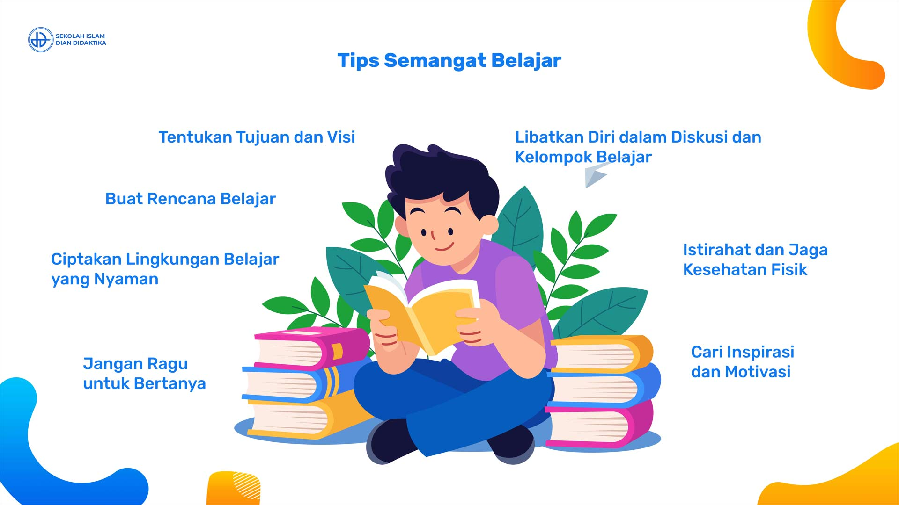

Jangan pendam sendirian. Guru BK siap mendengarkan dan membantu perjalanan belajarmu dengan penuh kerahasiaan.
Mulai Konseling RahasiaPelajari cara membagi waktu belajar dengan metode Pomodoro agar tidak mudah stres dan cepat paham.
Baca Selengkapnya →Latihan pernapasan sederhana yang bisa kamu lakukan saat merasa gugup atau kewalahan menghadapi tugas.
Baca Selengkapnya →
Temukan apa yang benar-benar memicu semangatmu untuk bersekolah dan meraih cita-cita masa depan.
Baca Selengkapnya →| Hari | Nama Guru BK | Jam Layanan | Status Ruangan |
|---|---|---|---|
| Senin | Dra. Hj. Siti Aminah, M.Pd. | 08.00 - 15.00 WIB | ● Standby |
| Selasa | Ahmad Fauzi, S.Pd. | 08.00 - 15.00 WIB | ● Standby |
| Rabu | Ratna Sari, S.Psi. | 08.00 - 15.00 WIB | ● Sesi Konseling |
| Kamis | Dra. Hj. Siti Aminah, M.Pd. | 08.00 - 15.00 WIB | ● Standby |
| Jumat | Ahmad Fauzi, S.Pd. | 08.00 - 14.00 WIB | ● Standby |
Jika kamu atau temanmu menghadapi situasi mendesak yang membutuhkan penanganan cepat, silakan hubungi hotline darurat di bawah ini:
Chat Hotline Darurat BK (WhatsApp)